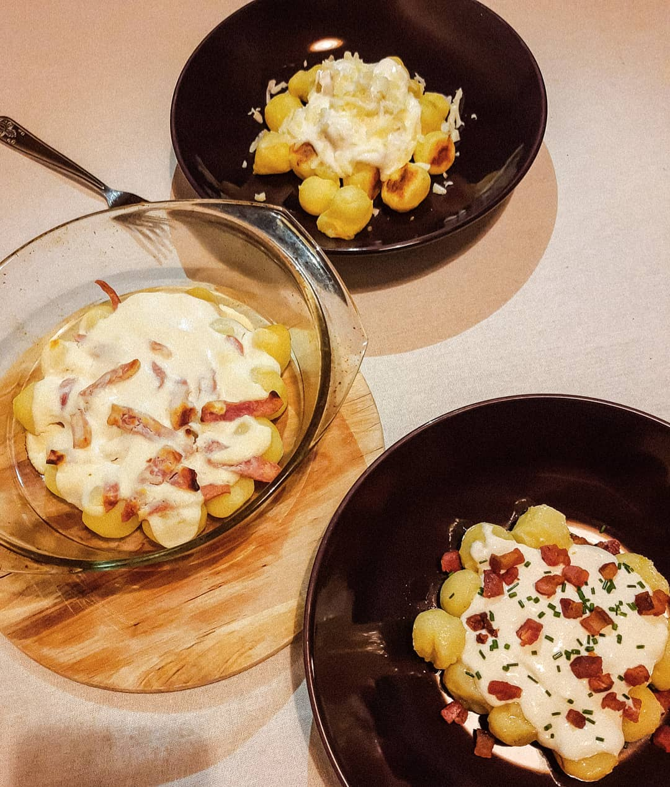

Džatky podľa @juicycrispycombo — Normy Jedál
💙❕Find English recipe in comments ⬇️👩🏻🍳👨🏻🍳
Dnes sme na obed pôvodne plánovali variť bryndzové halušky, ale Lukáš navrhol iné tradičné slovenské jedlo - džatky, známe aj ako huľky alebo zemiakové guľky.🟡🟡🟡 Jedlo je typické najmä pre oblasť Spiša, bolo jedlom chudobných. Chceli sme vyskúšať, čo sa z týchto guľôčok dá vyčariť a tak sme ich pripravili hneď na tri spôsoby (zhora na obrázku):
1. samostatne upečené gule v rúre s kyslou smotanou a strúhaným syrom - chutili skoro ako krokety, Luky ich zvolil za svojho favorita
2. zapečené s kyslou smotanou, bryndzou a opečenou šunkou - o trochu suchšie ako ostatné verzie, ale stále veľmi chutné
3. osmažené na panvici so slaninou, smotanou, bryndzou a pažítkou - Martinin favorit, veľmi podobný bryndzovým haluškám
Postup prípravy je jednoduchý:
Uvaríte zemiaky v osolenej vode (použili sme 0,5 kg zemiakov nakrájaných na kocky), zlejete vodu a v hrnci necháte len toľko, aby zemiaky zakrývala do tretiny výšky. Prisypete múku (použili sme 1 hrnček hladkej múky), zmiešate, necháte postáť 10 minút, roztlačíte zmes na kašu. Keď zmes trochu vychladne, vytvarujte guličky. Bryndzu zmiešajte so smotanou, no oblohu si môžete dotvoriť podľa vlastnej chuti. Pečené v rúre by určite dobre chutili aj s kyslou kapustou.
#dzatky #slovakfood #slovakfoodblogger #jcc #sheepcheese #potatodumplings #potatorecipes #sourcream #easyrecipe #traditionalcuisine #traditionalfood #foodtip #dinnertip #foodinspiration #foodstock #foodstagram #instafood #dnesjem #coupleinthekitchen #foodexperiment #foodlovers #whattoeat #couplecooking #quickmeal #easymeals #juicycrispycombo